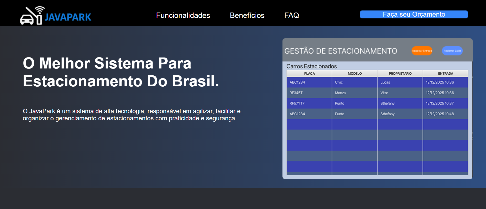
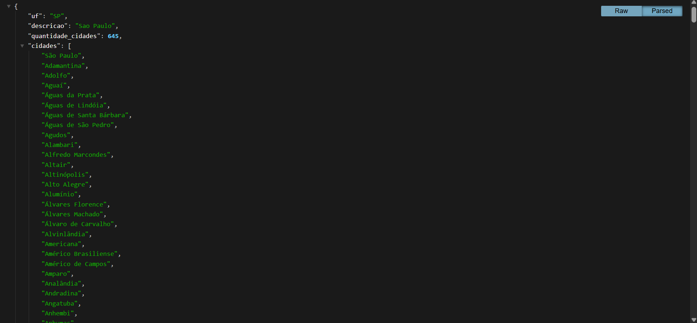
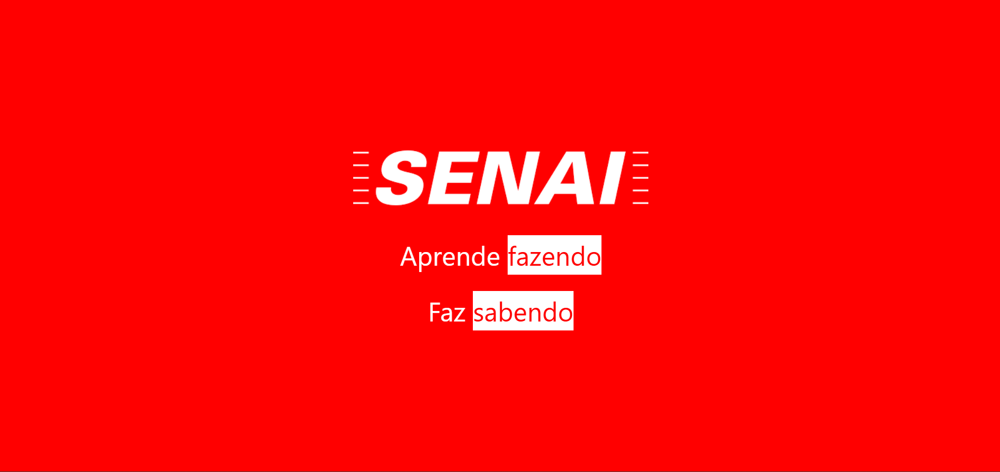
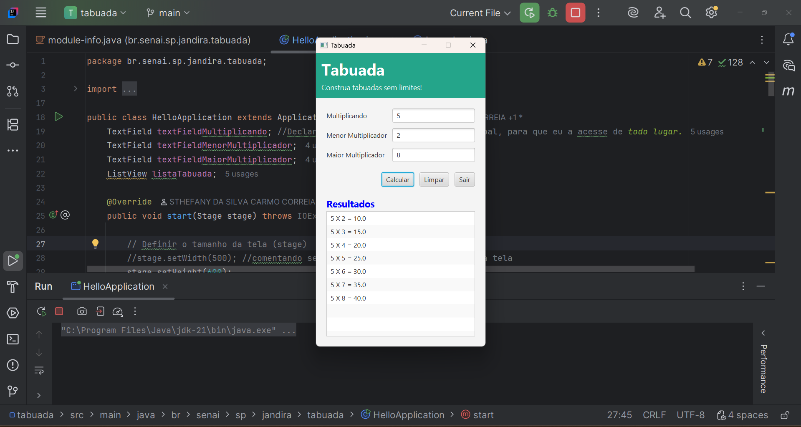
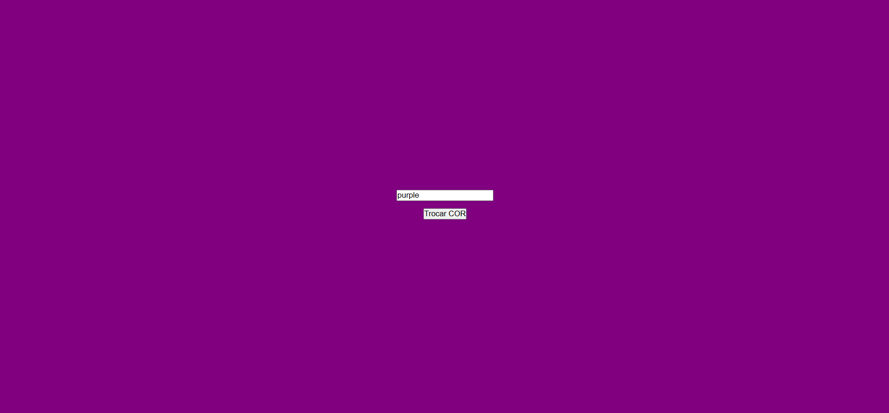

Front-End
Linguagem de Marcação: HTML5 (HyperText Markup Language)
Linguagem de Estilização: CSS3 (Cascading Style Sheets)
Figma
JavaScript
Visual Studio Code
Seja bem-vindo(a) ao meu Portifólio

Linguagem de Marcação: HTML5 (HyperText Markup Language)
Linguagem de Estilização: CSS3 (Cascading Style Sheets)
Figma
JavaScript
Visual Studio Code
Java (intellij IDEA)
JavaScript Node.js
Sistemas Operacionais
Visual Studio Code
API (Biblioteca EXPRESS e CORS)
Postman
Render.
GitHub
Github Desktop

Neste projeto, utilizei o Figma pela primeira vez para criar protótipos responsivos, garantindo a adaptação do site para desktop,
tablet e mobile.
Como principais desafios, destaquei o aprendizado das ferramentas e a necessidade de atender aos requisitos do cliente,
sempre buscando antecipar problemas e propor soluções eficientes.

Este foi o maior projeto desenvolvido até o momento no curso, reunindo todos os conhecimentos adquiridos ao longo do primeiro semestre, com destaque para a consolidação de Lógica de Programação e Algoritmos.
O objetivo foi criar um sis
tema de gerenciamento para estacionamentos,
atendendo às necessidades do cliente de agilizar, facilitar e organizar os processos.
O projeto foi desenvolvido em equipe, proporcionando a prática de trabalho colaborativo e o
desenvolvimento de habilidades interpessoais, como comunicação e organização.

Esta foi minha primeira API, desenvolvida com foco na aplicação de Lógica de Programação para a criação das funcionalidades.
Durante o projeto, aprendi a estruturar endpoints e a organizar a comunicação entre cliente e servidor, acompanhando todo o funcionamento do sistema na prática.
A API tem como objetivo disponibilizar informações sobre os estados do Brasil e foi publicada na nuvem utilizando o Render, permitindo seu acesso online.

Estudo e aplicação do framework Bulma em projeto em grupo. Primeiro contato com frameworks de CSS, reforçando a importância de dominar HTML e CSS para utilizá-los de forma eficiente e otimizar o desenvolvimento.

Neste projeto, desenvolvi uma calculadora de tabuadas. Foi uma experiência bastante completa e interessante, pois apliquei todos os conhecimentos adquiridos até então. Além disso, tive meu primeiro contato com o uso do JavaFX, o que contribuiu ainda mais para o meu aprendizado.

Este foi meu primeiro projeto com JavaScript no front-end, marcando a transição de páginas estáticas para interfaces dinâmicas e funcionais.